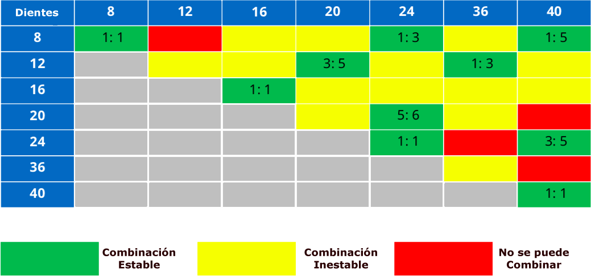
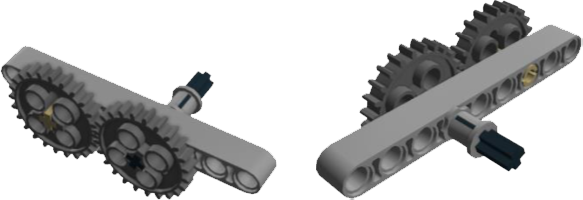
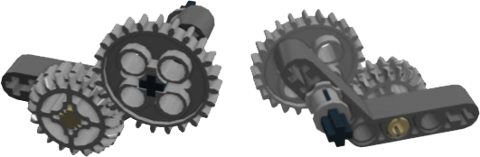
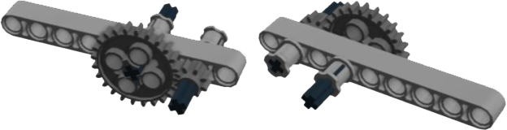
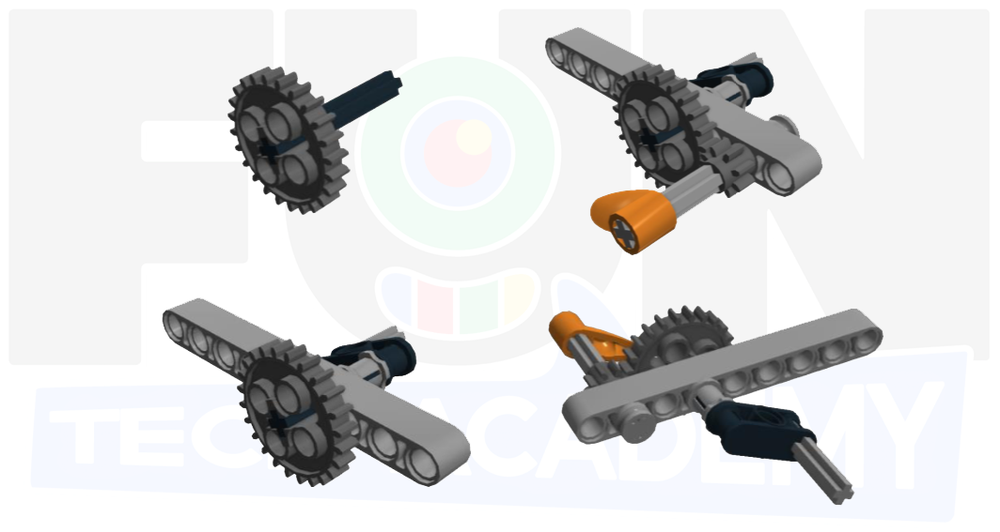
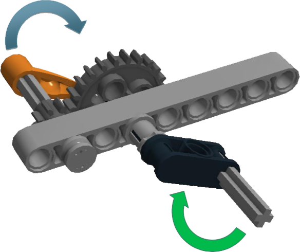

En esta actividad veremos la forma de unir distintos engranajes y ver que pasa con la velocidad y la fuerza.
Las distintas combinaciones de engranajes que podemos realizar con el contenido de la caja y dependiendo del
número de dientes de cada engranaje son:

Vamos a construir tres ejemplos básicos del uso de engranajes.
En el primero vamos a unir dos engranajes del mismo número de dientes sobre una viga recta. Esto lo que hará
es que el movimiento que apliquemos a uno de los engranajes hará mover el otro a la misma velocidad pero en
sentido contrario.

La segunda combinación, la haremos sobre una viga en ángulo. En este caso lo haremos con engranajes de distintos dientes. ¿Ves cual es la diferencia del movimiento de un engranaje respecto del otro dependiendo de qué engranaje hagamos girar?

Para ver esa diferencia en el movimiento de los engranajes, hagámoslo más evidente.
Para la tercera combinación cogeremos uno de los engranajes pequeños junto con otro más grande u los
pondremos juntos en una viga recta. ¿Ves ahora qué es lo que pasa con respecto al movimiento cuandio movemos
uno o el otro?

Vamos a construir un pequeño artilugio para ver mejor lo que pasa cuando mezclamos engranajes con distintas cantidades de dientes.

Si probamos a dar vueltas a la manivela, veremos como la pieza enganchada al engranaje pequeño gira mucho más rápido.
